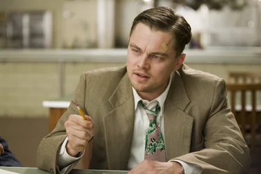
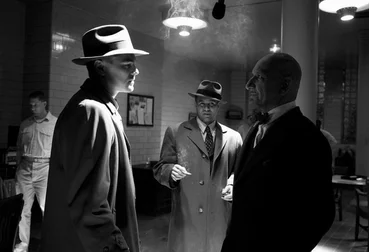
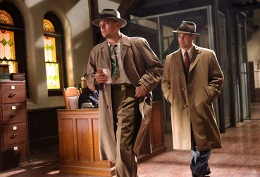
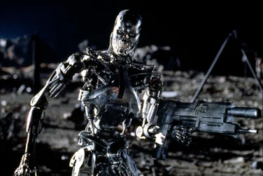
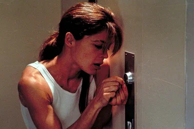
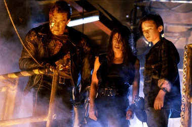
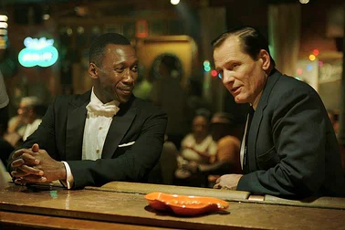
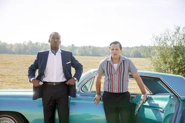
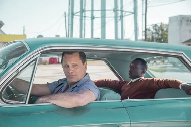

Мои любимые фильмы
Остров проклятых
Краткое содержание фильма
Два американских судебных пристава отправляются на один из островов в штате Массачусетс, чтобы расследовать исчезновение пациентки клиники для умалишенных преступников. При проведении расследования им придется столкнуться с паутиной лжи, обрушившимся ураганом и смертельным бунтом обитателей клиники.
Кадры из фильма
  О фильме
| Год | 2009 |
| Страна | США |
| Жанр | триллер, детектив, драма |
| Режиссер | Мартин Скорсезе |
Терминатор 2: Судный день
Краткое содержание фильма
Прошло более десяти лет с тех пор, как киборг из 2029 года пытался уничтожить Сару Коннор — женщину, чей будущий сын выиграет войну человечества против машин. Теперь у Сары родился сын Джон и время, когда он поведёт за собой выживших людей на борьбу с машинами, неумолимо приближается. Именно в этот момент из постапокалиптического будущего прибывает новый терминатор — практически неуязвимая модель T-1000, способная принимать любое обличье. Цель нового терминатора уже не Сара, а уничтожение молодого Джона Коннора. Однако шансы Джона на спасение существенно повышаются, когда на помощь приходит перепрограммированный сопротивлением терминатор предыдущего поколения. Оба киборга вступают в смертельный бой, от исхода которого зависит судьба человечества.
Кадры из фильма
  О фильме
| Год | 1991 |
| Страна | США |
| Жанр | фантастика, боевик, триллер |
| Режиссер | Джеймс Кэмерон |
Зеленая книга
Краткое содержание фильма
1960-е годы. После закрытия нью-йоркского ночного клуба на ремонт вышибала Тони по прозвищу Болтун ищет подработку на пару месяцев. Как раз в это время Дон Ширли — утонченный светский лев, богатый и талантливый чернокожий музыкант, исполняющий классическую музыку — собирается в турне по южным штатам, где ещё сильны расистские убеждения и царит сегрегация. Он нанимает Тони в качестве водителя, телохранителя и человека, способного решать текущие проблемы. У этих двоих так мало общего, и эта поездка навсегда изменит жизнь обоих.
Кадры из фильма
  О фильме
| Год | 2018 |
| Страна | США, Китай |
| Жанр | биография, комедия, драма |
| Режиссер | Питер Фаррелли |